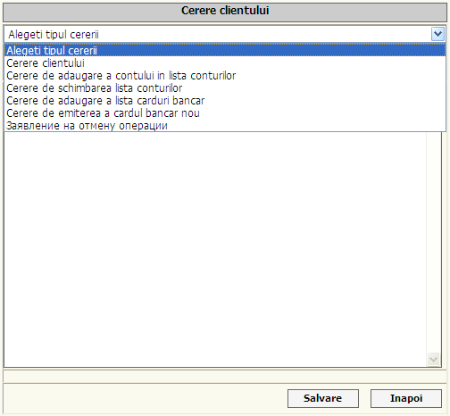

| |
||
|
|
Aveti posibilitatea sa scrieti cerere, care va fi prelucrata de un operator al bancii.
In Meniul dat aveti posibilitatea sa trimiteti mesaje operatorilor bancii, indicind referinta mesajului: Intrebari tehnice, carduri bancare, credite, plati comunale, sistemul de tranferuri rapide.